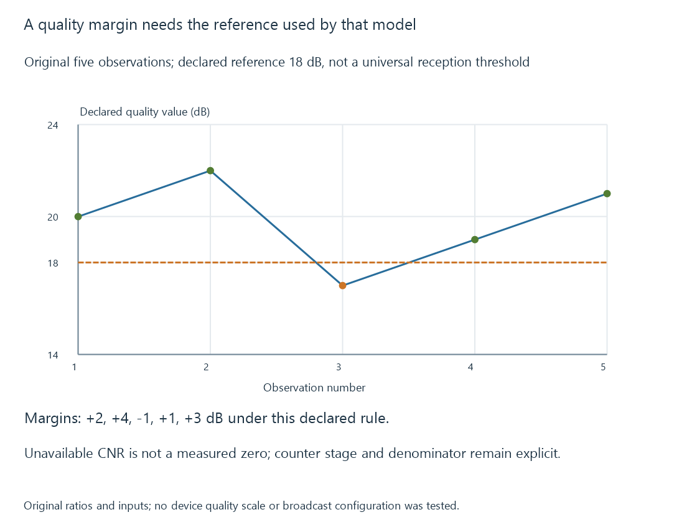

TV signal quality and decoding margin
TV signal quality describes receiver-specific digital-recovery measurements such as carrier/noise, modulation-error or correction-related observations rather than input power alone.
A receiver can report a strong input while having difficulty distinguishing the wanted digital signal. Signal quality concerns that recovery relationship rather than raw received level alone.
The exact field might represent carrier/noise, modulation error, an implementation index or another measurement. Its meaning and scale must accompany the value.
Several metrics have different referents
| Observation | Relationship described |
|---|---|
| Carrier/noise ratio | Wanted carrier power relative to the relevant noise measurement |
| Modulation error ratio (MER) | Reference-symbol energy relative to error-vector energy |
| Pre-correction error observation | Errors at the declared earlier decoding stage |
| Post-correction/symbol integrity | Relevant recovered-output accuracy |
| Relative quality index | The receiver’s defined normalized/derived reporting scale |
SiliconDust distinguishes strength, signal quality and symbol quality for its own receiver reports. Those percentages should not be silently used as universal measurements for every tuner.
Linux’s frontend statistics likewise identify scale and stage availability rather than requiring every device to expose every statistic at all times.
Two original ratio exercises
If a declared wanted carrier has power 100 and measured noise has power one:
C/N = 10 × log10(100 / 1) = 20 dB
In a separate original constellation exercise, mean reference-symbol energy is one and mean error-vector energy is 0.001:
MER = 10 × log10(1 / 0.001) = 30 dB
The two numbers compare different defined quantities. The error-vector measurement can include distortion as well as noise.
These are mathematical inputs, not measured frontend data or a threshold for any broadcast configuration.
A margin needs a specified reference
Assume an original receiver/configuration model requires eighteen dB by its declared quality rule.
| Observation | Model measurement | Margin relative to declared rule |
|---|---|---|
| 1 | 20 dB | +2 dB |
| 2 | 22 dB | +4 dB |
| 3 | 17 dB | −1 dB |
| 4 | 19 dB | +1 dB |
| 5 | 21 dB | +3 dB |

The third observation is below this model’s reference. A real failure result cannot be inferred from it without the actual modulation/coding, receiver, measurement method and time behavior.
A percentage threshold copied from another device or delivery system does not establish that reference.
Error correction changes the useful observation
Consider an original interval with 1200 reported errors among one million earlier-stage bits, and zero reported errors among 800,000 later-stage bits.
The earlier observed ratio is 0.12%. The later counter reports no errors at its own defined stage in that interval.
That is consistent with an implemented correction route producing usable output despite earlier errors. It does not prove the exact number of corrected information bits by subtracting counters from different stages.
A second declared interval has forty later-stage errors among 800,000 bits: 40/800000 = 0.00005, or 0.005%.
These are readable counter exercises. Real devices can report estimated bit ratios, uncorrectable blocks or other measures, with different meanings and availability.
Unavailable is not a measured zero
Consider an original readable observation:
{
"cnr": {"state": "not-available"},
"uncorrectableBlocks": {
"state": "available",
"value": 0,
"intervalSeconds": 1
}
}
The first field supplies no CNR measurement. The second supplies a zero count under its own stated interval.
Treating both as numeric zero would invent a CNR result. A genuine zero-dB power ratio means equal numerator and denominator, which is a very different assertion from no measurement.
Availability can depend on the receiver’s acquisition stage or supported statistics. Its reported state needs to travel with the value.
The packet/media path can add other failures
Reception quality is upstream of the source’s delivered media. A clean recovered output can still experience network loss or a later conversion problem.
Conversely, increasing a client buffer cannot recreate broadcast information that the receiver failed to recover.
Uncorrectable errors develops counter intervals and later picture dependencies. The same source identity and observation interval connect the receiver measurement to the media affected by it.
See Also
- TV signal strength
- Uncorrectable reception errors
- DVB-T2 terrestrial television
- Over-the-air television